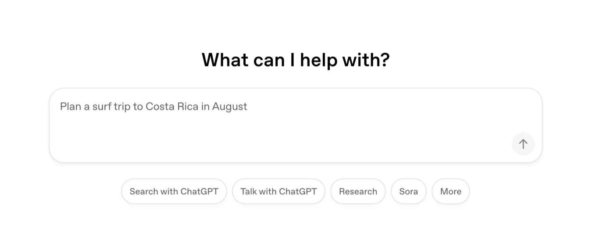
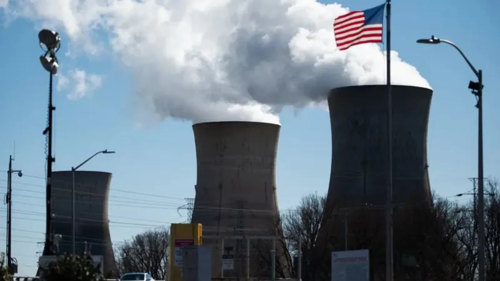

Le paradoxe de Jevons
L'efficacité réduit le coût d'un usage. L'effet sur le total dépend aussi de l'évolution de la demande.
Ce que Jevons a vu dans le charbon
- Au XIXe siècle, les machines à vapeur brûlent de moins en moins de charbon pour le même travail.
- Jevons a observé que la consommation totale de charbon augmentait malgré ces gains.
William Stanley Jevons, The Coal Question, 1865.
Un mécanisme possible
1. Modèles plus efficaces
Chaque génération fait mieux avec moins de calcul.
2. Coûts en baisse
Le prix du million de jetons descend.
3. Nouveaux usages
La baisse du coût peut accroître la demande.
4. Effet sur le total
Il dépend des gains et de la demande.
C'est le mécanisme proposé par l'effet rebond ; son ampleur doit être mesurée.
Le calcul revient moins cher
Certains modèles récents atteignent un niveau comparable avec moins de calcul par jeton.
Le tarif au jeton baisse également, ce qui rend de nouveaux usages accessibles.
De nouveaux usages
Résumés, correction, traduction, autocomplétion, agents qui tournent seuls pendant des heures.
Le coût d'une requête baisse. Le nombre de requêtes, lui, se compte en milliards.

Un agent, ce n'est pas un message
Vous tapez une consigne. L'agent, lui, découpe le travail.
Il lit des fichiers, appelle des outils, relit ses propres notes, se corrige, recommence. Une seule consigne déclenche des dizaines d'allers-retours avec le modèle.
Chacun de ces allers-retours est facturé en jetons, et donc en électricité.
Un cas d'usage mesuré
Un message de chat
0,24 Wh
médiane mesurée par Google.
Une consigne à un agent
≈ 150 Wh
soit environ 600 fois plus dans cet exemple.
Mesure publiée par le climatologue Zeke Hausfather, 2026 : huit semaines d'usage réel, 1 138 consignes, plus de 14 000 appels au modèle, environ 170 kWh. Incertitude annoncée d'un facteur 2, soit 60 à 290 Wh.
L'agent se relit sans arrêt
Sur ces 3,2 milliards de jetons : 96 % de relecture du contexte, 3,6 % de contenu neuf, 0,4 % de réponse visible.
Ces relectures passent par le cache : le fournisseur garde le contexte déjà calculé, le facture cinq à dix fois moins, et refait moins de calcul. Un jeton relu ne coûte donc pas un jeton neuf.
Dans cette mesure, le volume total traité explique l'essentiel de la consommation, pas la seule réponse visible.
Répartition mesurée par Hausfather, 2026. Les tarifs de cache sont publiés par les fournisseurs ; le gain en énergie, lui, n'est pas publié.
Sur compar:IA, un repère
Le scénario « session de code agentique » compte 450 k jetons en entrée et 50 k en sortie.
L'estimation d'énergie ne retient que la sortie. Les 450 k jetons d'entrée, qui forment ici l'essentiel du volume, n'entrent pas dans le calcul.
L'entrée omise tire l'estimation vers le bas ; l'hypothèse d'une exécution sans cache peut la tirer vers le haut. Le chiffre donne un ordre de grandeur, pas une borne démontrée.
Formule du produit : énergie = Wh par million de jetons × jetons de sortie. Hypothèse affichée : exécution sans cache.
Et à grande échelle
Scénario hypothétique : 1 % de la population mondiale fait écrire cinq pages par une IA chaque jour, pendant un an, à 15,5 Wh le texte. Cela représente la production annuelle de :
105 éoliennes
Calcul : 82 millions de personnes × 15,5 Wh × 365 jours = 464 GWh par an. Une éolienne de 2 MW à 25 % de facteur de charge produit 4,4 GWh par an. Population mondiale : ONU, World Population Prospects 2024. Parc éolien : RTE, bilan électrique 2025.
Les deux faits, même acteur
Google publie les deux, sur la même année.
Par requête, ça baisse
÷ 33
d'énergie par requête texte sur Gemini, en douze mois. Médiane : 0,24 Wh.
Au total, ça monte
+ 37 %
d'électricité pour ses centres de données en 2025, soit environ 42 TWh.
Google, « Measuring the environmental impact of delivering AI at Google Scale », août 2025, et Environmental Report 2026.
À l'échelle d'un pays
États-Unis, 2023
4,4 %
de l'électricité du pays, pour les centres de données.
Projection 2028
6,7 à 12 %
selon le scénario retenu.
De 176 TWh à une fourchette de 325 à 580 TWh. Une requête se compte en milliwattheures, un pays en térawattheures.
Lawrence Berkeley National Laboratory, United States Data Center Energy Usage Report, décembre 2024. Ces projections couvrent tous les centres de données, pas la seule IA.
Et l'IA seule, dans tout ça
0,1 à 0,2 %
de l'électricité mondiale, pour les centres de données dédiés à l'IA en 2023.
Le chiffre est petit, et il croît vite : l'agence prévoit qu'il soit multiplié par six ou huit d'ici 2030. Les deux moitiés de la phrase comptent autant.
Dérivé des estimations de l'Agence internationale de l'énergie, avril 2025 : 30 à 50 TWh en 2023 pour les centres dédiés à l'IA, 200 à 400 TWh projetés pour 2030. Calcul rapporté par Gauthier Roussilhe, Bon Pote, avril 2025.
Cinq fois mille
- 1 mWhUn jeton produit.
- × 1 000
- 1 WhUne réponse de quelques lignes.
- × 1 000
- 1 kWhUn millier de réponses.
- × 1 000
- 1 MWhUn logement français pendant trois mois.
- × 1 000
- 1 GWhEnviron 220 logements pendant un an.
- × 1 000
- 1 TWhEnviron dix-neuf heures d'électricité pour la France entière.
Ordres de grandeur. Le logement français est pris à 4,5 MWh d'électricité par an. La France consomme de l'ordre de 450 TWh par an, tous usages confondus.
Deux échelles d'action
À l'échelle d'un usage
Vos échanges de l'année tiennent dans quelques kilowattheures. Moins qu'un radiateur allumé une journée.
À l'échelle du parc
Les centres de données se comptent en térawattheures, et se construisent pour dix ans.
Le choix du modèle agit sur la consommation d'un usage. Les décisions d'investissement et de capacité agissent, elles, sur l'échelle du parc.
Le premier ordre de grandeur se lit sur le bilan d'un duel, le second dans les rapports annuels des fournisseurs.
Un rebond possible
Les gains par requête et la hausse du total sont mesurés ; la part du lien de cause à effet entre les deux ne l'est pas.
La croissance vient aussi de l'argent investi et de fonctionnalités plus gourmandes : vidéo, raisonnement, agents.
Luccioni, Strubell et Crawford, « From Efficiency Gains to Rebound Effects », FAccT 2025, qui juge l'effet « hautement plausible » sans le démontrer.
Deux affirmations à vérifier
« L'efficacité va tout régler »
Cette hypothèse suppose que les gains d'efficacité compensent la croissance des usages.
« L'IA va tout engloutir »
Cette hypothèse suppose une croissance très forte des usages et de leur coût unitaire.
Pour les évaluer, il faut expliciter les hypothèses de volume, d'efficacité et de coût.
Ce que ça change pour le débat
L'efficacité ne décide rien toute seule sur le total consommé.
- Un modèle plus sobre réduit ma consommation. Réduit-il celle du parc ?
- Si l'IA ne coûte presque rien, qu'est-ce qui limite son usage ?
- Agir sur la technique, le prix, la règle, ou nos habitudes ?
